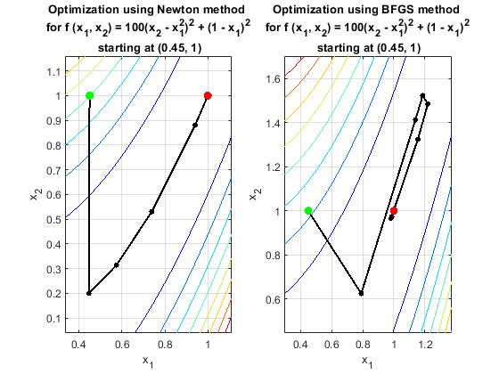

Contents
Homework Introduction
Establishing Parameters
clear
clc
alpha = 1;
tolerance = 1e-6;
param = [alpha, tolerance];
Setting Up Functions
x = sym('x', [2,1]);
f(x) = 100*(x(2) - x(1).^2).^2 + (1 - x(1)).^2;
f_grad(x) = gradient(f);
f_hess(x) = hessian(f);
R = rosenbrock_2Nd(x,-1);
disp(R);
NE = "Newton";
BS = "BFGS";
Iterating Methods and Printing Results:
points = length(R);
for i = 1:points
x_0 = R(i,:)';
figure(i)
clf
hold on
grid on
subplot(1,2,1)
info_matrix1 = linesearch5("Newton", x_0, f, param);
plot5(info_matrix1, "Newton", f);
inner1 = mean(info_matrix1(:,8));
outer1 = length(info_matrix1(:,1));
subplot(1,2,2)
info_matrix2 = linesearch5("BFGS", x_0, f, param);
plot5(info_matrix2, "BFGS", f);
inner2 = mean(info_matrix2(:,8));
outer2 = length(info_matrix2(:,1));
convg2 = info_matrix2(end,9);
summary = ["For starting point (" + x_0(1) + ", " + x_0(2) ...
+ "):" + newline + "The Newton method averaged " ...
+ inner1 + " inner iterations and used " ...
+ outer1 + " outer iterations." + newline ...
+ "The BFGS Method averaged " ...
+ inner2 + " inner iterations, used " ...
+ outer2 + " outer iterations and " ...
+ "ended with " + convg2 + " convergence." + newline];
disp(summary);
disp(["Newton method at starting point(" ...
+ x_0(1) + ", " + x_0(2) + "):"]);
data1 = table_plot(info_matrix1);
disp(data1);
disp(["BFGS method at starting point(" ...
+ x_0(1) + ", " + x_0(2) + "):"]);
data2 = table_plot(info_matrix2);
disp(data2);
end
1.2000 1.2000
1.1000 1.1000
1.0500 1.0500
1.0250 1.0250
-1.2000 1.0000
-0.1000 1.0000
0.4500 1.0000
0.7250 1.0000
-2.4000 2.0000
For starting point (1.2, 1.2):
The Newton method averaged 7 inner iterations and used 6 outer iterations.
The BFGS Method averaged 8.25 inner iterations, used 8 outer iterations and ended with 102.8128 convergence.
Newton method at starting point(1.2, 1.2):
iterations x_1 x_2 alpha p_k1 p_k2 fx_k inner_iterations convergence
__________ ______ ______ ________ ___________ _________ __________ ________________ ___________
0 1.2 1.2 1 0 0 5.8 0 0
1 1.1959 1.4303 125.2 -3.2609e-05 0.0018391 0.038384 3 NaN
2 1.1133 1.2326 0.15752 -0.52462 -1.2549 0.017469 20 NaN
3 1.0143 1.0262 7.2902 -0.013578 -0.028303 0.0008559 6 NaN
4 1.0039 1.0079 1.3024 -0.0080176 -0.014102 1.7243e-05 7 NaN
5 1 1.0001 0.060092 -0.063447 -0.12985 8.2974e-09 6 NaN
BFGS method at starting point(1.2, 1.2):
iterations x_1 x_2 alpha p_k1 p_k2 fx_k inner_iterations convergence
__________ ________ _______ ________ __________ ___________ __________ ________________ ___________
0 1.2 1.2 1 0 0 5.8 0 0
1 -0.21109 1.7859 1.5279 -0.92355 0.38348 304.7 4 2031.2
2 0.93452 0.87468 0.40226 2.8479 -2.2653 0.0044695 8 808.13
3 0.93498 0.874 1.6137 0.00028741 -0.00041971 0.0042308 3 1129.2
4 0.98113 0.96048 147.9 0.000312 0.0005847 0.00081317 6 2.3681
5 0.99443 0.98921 1.6178 0.0082181 0.017757 4.1588e-05 36 67.832
6 1.0004 1.0009 0.27326 0.021929 0.042903 1.065e-06 5 44.436
7 0.99997 0.99994 0.038413 -0.011661 -0.025745 1.0904e-09 4 102.81
For starting point (1.1, 1.1):
The Newton method averaged 6.8 inner iterations and used 5 outer iterations.
The BFGS Method averaged 8.4286 inner iterations, used 7 outer iterations and ended with 39.1613 convergence.
Newton method at starting point(1.1, 1.1):
iterations x_1 x_2 alpha p_k1 p_k2 fx_k inner_iterations convergence
__________ _______ _______ _______ _________ _________ __________ ________________ ___________
0 1.1 1.1 1 0 0 1.22 0 0
1 1.0956 1.2005 53.375 -8.15e-05 0.0018827 0.0091491 3 NaN
2 1.0382 1.0746 0.10419 -0.55109 -1.2078 0.0025385 19 NaN
3 1.0033 1.0071 2.3912 -0.014595 -0.028231 3.2404e-05 6 NaN
4 0.99985 0.99971 0.19063 -0.018289 -0.038996 3.5906e-08 6 NaN
BFGS method at starting point(1.1, 1.1):
iterations x_1 x_2 alpha p_k1 p_k2 fx_k inner_iterations convergence
__________ ________ _______ ________ __________ ___________ __________ ________________ ___________
0 1.1 1.1 1 0 0 1.22 0 0
1 -0.23007 1.7021 1.46 -0.91101 0.41239 273.48 4 1706.3
2 0.95572 0.91737 0.22588 5.2496 -3.474 0.0035364 9 799.94
3 0.95703 0.91577 4.5644 0.00028798 -0.00034891 0.001848 3 1213.4
4 0.99237 0.98362 166.12 0.00021271 0.00040839 0.00019702 5 2.8677
5 0.99896 0.99798 0.73752 0.0089363 0.01947 1.4165e-06 33 77.982
6 1 1.0001 0.045113 0.024015 0.046934 1.0266e-08 5 39.161
For starting point (1.05, 1.05):
The Newton method averaged 6 inner iterations and used 5 outer iterations.
The BFGS Method averaged 15.8333 inner iterations, used 6 outer iterations and ended with 89.9744 convergence.
Newton method at starting point(1.05, 1.05):
iterations x_1 x_2 alpha p_k1 p_k2 fx_k inner_iterations convergence
__________ ______ ______ ________ ___________ _________ __________ ________________ ___________
0 1.05 1.05 1 0 0 0.27812 0 0
1 1.0456 1.0934 24.539 -0.00017737 0.0017693 0.0020838 3 NaN
2 1.0097 1.0181 0.059338 -0.60641 -1.2687 0.00025892 18 NaN
3 1.0011 1.0023 0.66528 -0.012872 -0.023838 1.7513e-06 4 NaN
4 1 1 0.030392 -0.036199 -0.074853 1.8932e-12 5 NaN
BFGS method at starting point(1.05, 1.05):
iterations x_1 x_2 alpha p_k1 p_k2 fx_k inner_iterations convergence
__________ ________ _______ _______ __________ ___________ __________ ________________ ___________
0 1.05 1.05 1 0 0 0.27812 0 0
1 -0.24089 1.6619 1.4286 -0.90361 0.42835 258.79 4 1557.1
2 0.96348 0.93798 0.13829 8.7093 -5.2352 0.010711 10 791.77
3 0.96687 0.93472 11.503 0.00029439 -0.00028348 0.0010991 3 1276.5
4 0.99655 0.99242 199.93 0.00014848 0.00028861 6.0653e-05 5 3.924
5 1 1.0001 0.38412 0.0090649 0.019912 1.5156e-09 73 89.974
For starting point (1.025, 1.025):
The Newton method averaged 5.75 inner iterations and used 4 outer iterations.
The BFGS Method averaged 7.3333 inner iterations, used 6 outer iterations and ended with 101.8242 convergence.
Newton method at starting point(1.025, 1.025):
iterations x_1 x_2 alpha p_k1 p_k2 fx_k inner_iterations convergence
__________ ______ ______ _______ ___________ _________ __________ ________________ ___________
0 1.025 1.025 1 0 0 0.066289 0 0
1 1.0209 1.0423 11.757 -0.00034783 0.0014707 0.00043736 3 NaN
2 1.0017 1.003 0.02646 -0.72641 -1.4844 1.629e-05 17 NaN
3 1.0001 1.0002 0.17009 -0.0094168 -0.016673 9.1996e-09 3 NaN
BFGS method at starting point(1.025, 1.025):
iterations x_1 x_2 alpha p_k1 p_k2 fx_k inner_iterations convergence
__________ ________ _______ ________ __________ ___________ __________ ________________ ___________
0 1.025 1.025 1 0 0 0.066289 0 0
1 -0.24669 1.6424 1.4136 -0.89959 0.43674 251.68 4 1485.8
2 0.96419 0.94905 0.094879 12.762 -7.3077 0.038849 11 787.16
3 0.97125 0.94323 23.523 0.00030007 -0.00024761 0.00082744 4 1299.2
4 0.99843 0.99645 249.13 0.00010909 0.00021365 1.9172e-05 5 5.8355
5 1.0003 1.0005 0.20632 0.0088463 0.019605 7.9251e-08 20 101.82
For starting point (-1.2, 1):
The Newton method averaged 6.5 inner iterations and used 12 outer iterations.
The BFGS Method averaged 7.6 inner iterations, used 10 outer iterations and ended with 128.3857 convergence.
Newton method at starting point(-1.2, 1):
iterations x_1 x_2 alpha p_k1 p_k2 fx_k inner_iterations convergence
__________ _________ ________ _______ __________ __________ __________ ________________ ___________
0 -1.2 1 1 0 0 24.2 0 0
1 -1.1752 1.3823 233.84 0.00010615 0.0016347 4.7315 4 NaN
2 -0.95965 0.8756 0.28292 0.76183 -1.7909 4.0456 21 NaN
3 -0.69021 0.42118 32.051 0.0084064 -0.014178 3.1616 6 NaN
4 -0.33434 0.069897 54.884 0.006484 -0.0064005 1.9559 7 NaN
5 -0.051284 -0.03605 23.42 0.012086 -0.0045238 1.2548 7 NaN
6 0.23846 0.027365 19.889 0.014568 0.0031884 0.66696 5 NaN
7 0.48168 0.20837 13.31 0.018274 0.0136 0.32456 6 NaN
8 0.70687 0.48416 14.672 0.015348 0.018797 0.10996 5 NaN
9 0.88391 0.77284 12.139 0.014584 0.023781 0.020627 5 NaN
10 1.003 1.0066 8.9269 0.013337 0.026191 5.8585e-05 6 NaN
11 0.99965 0.99931 0.29885 -0.011095 -0.024525 1.5155e-07 6 NaN
BFGS method at starting point(-1.2, 1):
iterations x_1 x_2 alpha p_k1 p_k2 fx_k inner_iterations convergence
__________ _________ _________ _______ ___________ __________ __________ ________________ ___________
0 -1.2 1 1 0 0 24.2 0 0
1 0.20147 1.572 1.5137 0.92585 0.3779 235.17 5 2128.1
2 -0.7626 0.58923 0.5456 -1.767 -1.8013 3.1126 7 663.77
3 -0.75775 0.56803 15.977 0.00030366 -0.0013272 3.0935 4 328.27
4 -0.56085 0.27308 271.17 0.00072608 -0.0010877 2.6083 9 12.522
5 -0.043106 -0.019865 173.09 0.0029913 -0.0016925 1.1353 7 222.9
6 1.0247 1.0504 236.58 0.0045137 0.004524 0.00062387 11 218.67
7 1.0246 1.0496 0.15065 -0.001161 -0.0053475 0.00060385 5 349.77
8 1.0021 1.0036 27.811 -0.00080906 -0.0016543 2.9702e-05 5 13.542
9 0.99978 0.99954 0.26916 -0.0084645 -0.015108 6.1552e-08 23 128.39
For starting point (-0.1, 1):
The Newton method averaged 6.5556 inner iterations and used 9 outer iterations.
The BFGS Method averaged 5.5 inner iterations, used 12 outer iterations and ended with 35.0432 convergence.
Newton method at starting point(-0.1, 1):
iterations x_1 x_2 alpha p_k1 p_k2 fx_k inner_iterations convergence
__________ ________ _________ _______ ___________ __________ __________ ________________ ___________
0 -0.1 1 1 0 0 99.22 0 0
1 -0.10558 0.01121 201.48 -2.7711e-05 -0.0049076 1.2223 3 NaN
2 0.061821 -0.024149 0.33024 0.50691 -0.10707 0.95842 20 NaN
3 0.27508 0.044146 8.5715 0.02488 0.0079678 0.62488 6 NaN
4 0.54909 0.28194 18.279 0.014991 0.013009 0.2416 7 NaN
5 0.74024 0.53261 10.79 0.017715 0.023231 0.09105 6 NaN
6 0.92768 0.85521 14.877 0.0126 0.021686 0.0081277 6 NaN
7 0.99937 0.99931 4.4117 0.01625 0.032663 3.1662e-05 7 NaN
8 1.0001 1.0002 0.25042 0.0028032 0.0033757 6.0039e-09 4 NaN
BFGS method at starting point(-0.1, 1):
iterations x_1 x_2 alpha p_k1 p_k2 fx_k inner_iterations convergence
__________ ________ _________ ________ __________ ___________ __________ ________________ ___________
0 -0.1 1 1 0 0 99.22 0 0
1 -0.27427 0.077416 0.9389 -0.18561 -0.98262 1.6242 3 292.62
2 -0.20863 0.018473 0.075383 0.87073 -0.78191 1.5235 8 83.308
3 0.057335 -0.028901 49.935 0.0053262 -0.00094871 0.99223 8 79.708
4 0.34715 0.19705 42.923 0.006752 0.005264 1.0119 4 147.63
5 0.58247 0.33221 7.1464 0.032928 0.018913 0.17932 9 34.133
6 0.61662 0.38909 -8.5574 -0.0039907 -0.0066468 0.15484 5 108.61
7 0.79586 0.62586 18.152 0.0098745 0.013044 0.047352 9 29.631
8 0.82852 0.69137 8.5606 0.0038155 0.0076527 0.031824 6 95.856
9 0.95315 0.90597 10.424 0.011956 0.020586 0.0028386 5 31.781
10 0.96642 0.93521 2.836 0.0046789 0.010313 0.0012806 6 75.966
11 1.0001 1.0002 2.8634 0.011762 0.022703 3.2827e-08 3 35.043
For starting point (0.45, 1):
The Newton method averaged 7.5 inner iterations and used 6 outer iterations.
The BFGS Method averaged 6.4444 inner iterations, used 9 outer iterations and ended with 16.9764 convergence.
Newton method at starting point(0.45, 1):
iterations x_1 x_2 alpha p_k1 p_k2 fx_k inner_iterations convergence
__________ _______ _______ _______ ___________ __________ __________ ________________ ___________
0 0.45 1 1 0 0 63.903 0 0
1 0.44653 0.19941 215.31 -1.6115e-05 -0.0037182 0.30633 3 NaN
2 0.57503 0.31417 0.25676 0.50047 0.44693 0.2078 21 NaN
3 0.73941 0.53064 7.3515 0.02236 0.029446 0.093795 7 NaN
4 0.94063 0.88062 17.331 0.011611 0.020194 0.0052679 6 NaN
5 1 1 3.0765 0.019309 0.038818 1.3557e-07 8 NaN
BFGS method at starting point(0.45, 1):
iterations x_1 x_2 alpha p_k1 p_k2 fx_k inner_iterations convergence
__________ _______ _______ _______ __________ ___________ __________ ________________ ___________
0 0.45 1 1 0 0 63.903 0 0
1 0.79062 0.62441 0.50704 0.67178 -0.74075 0.043884 5 383.39
2 1.1386 1.4128 0.85443 0.4073 0.92267 1.3714 5 144.93
3 1.1853 1.5228 -1.8622 -0.025085 -0.059073 1.4204 4 87.04
4 1.2183 1.485 237.41 0.00013898 -0.00015924 0.04771 4 1768.7
5 1.1544 1.3247 -1.2673 0.050484 0.12647 0.030006 18 18.105
6 0.98213 0.96611 38.923 -0.0044249 -0.0092128 0.00055035 11 85.662
7 0.98711 0.97405 0.68891 0.0072273 0.011532 0.00017768 7 124.38
8 1 1 1.2064 0.010702 0.021532 3.7247e-08 4 16.976
For starting point (0.725, 1):
The Newton method averaged 7.3333 inner iterations and used 6 outer iterations.
The BFGS Method averaged 7 inner iterations, used 6 outer iterations and ended with 49.5205 convergence.
Newton method at starting point(0.725, 1):
iterations x_1 x_2 alpha p_k1 p_k2 fx_k inner_iterations convergence
__________ _______ _______ _______ ___________ __________ __________ ________________ ___________
0 0.725 1 1 0 0 22.579 0 0
1 0.72207 0.5214 167.56 -1.7482e-05 -0.0028563 0.077245 3 NaN
2 0.81875 0.66102 0.19442 0.49728 0.71811 0.041567 21 NaN
3 0.94058 0.87851 6.3185 0.019282 0.034422 0.0073585 6 NaN
4 0.97928 0.96032 3.6898 0.010487 0.022172 0.00060661 6 NaN
5 0.99963 0.99922 0.4488 0.045338 0.08666 3.1298e-07 8 NaN
BFGS method at starting point(0.725, 1):
iterations x_1 x_2 alpha p_k1 p_k2 fx_k inner_iterations convergence
__________ _______ _______ ________ _________ _________ __________ ________________ ___________
0 0.725 1 1 0 0 22.579 0 0
1 0.92782 0.86068 0.24606 0.82427 -0.5662 0.0052126 6 708.33
2 0.93254 0.87134 0.015064 0.31291 0.70763 0.0048443 7 96.706
3 0.98395 0.96674 9.6677 0.0053182 0.0098676 0.00046104 7 30.206
4 0.99436 0.98911 1.2361 0.0084214 0.018099 4.4137e-05 17 60.083
5 1.0004 1.0008 0.32007 0.018749 0.036514 5.9984e-07 5 49.52
For starting point (-2.4, 2):
The Newton method averaged 10 inner iterations and used 15 outer iterations.
The BFGS Method averaged 9.0714 inner iterations, used 14 outer iterations and ended with 94.7392 convergence.
Newton method at starting point(-2.4, 2):
iterations x_1 x_2 alpha p_k1 p_k2 fx_k inner_iterations convergence
__________ _________ _________ _______ __________ __________ __________ ________________ ___________
0 -2.4 2 1 0 0 1425.3 0 0
1 -2.3955 5.7384 3693.8 1.2224e-06 0.0010121 11.529 3 NaN
2 -2.145 4.5382 0.49406 0.50703 -2.4292 10.284 26 NaN
3 -1.8279 3.2634 83.838 0.0037826 -0.015206 8.5996 6 NaN
4 -1.4094 1.9235 157.32 0.00266 -0.0085171 6.2004 7 NaN
5 -1.062 1.0673 82.539 0.0042088 -0.010373 4.6181 7 NaN
6 -0.70339 0.44356 73.373 0.0048876 -0.0085014 3.1637 5 NaN
7 -0.38296 0.10103 43.44 0.0073765 -0.0078851 2.1207 6 NaN
8 -0.074093 -0.032361 30.205 0.010226 -0.0044162 1.2969 6 NaN
9 0.2042 0.010448 18.311 0.015198 0.0023379 0.73095 6 NaN
10 0.45987 0.18766 14.73 0.017358 0.012031 0.3485 5 NaN
11 0.68214 0.44861 13.754 0.01616 0.018972 0.12894 4 NaN
12 0.86899 0.74615 13.147 0.014213 0.022633 0.025252 4 NaN
13 0.99569 0.9907 9.1553 0.013839 0.026711 6.7759e-05 6 NaN
14 0.99966 0.99934 0.32014 0.01239 0.026974 1.5373e-07 59 NaN
BFGS method at starting point(-2.4, 2):
iterations x_1 x_2 alpha p_k1 p_k2 fx_k inner_iterations convergence
__________ _________ ________ ________ __________ __________ __________ ________________ ___________
0 -2.4 2 1 0 0 1425.3 0 0
1 -1.4777 2.1918 0.94203 0.97906 0.20359 6.1457 4 8850.3
2 -0.56327 1.1783 1.2937 0.70683 -0.78344 76.572 4 1090.7
3 -0.61325 1.2386 -2.5245 0.019796 -0.02391 77 4 324.65
4 -0.64785 0.42037 -2431.7 1.423e-05 0.00033649 2.7155 4 455.5
5 -0.48437 0.19718 -53.481 -0.0030568 0.0041732 2.3435 14 17.485
6 -0.034559 -0.02335 133.02 0.0033815 -0.0016579 1.1306 16 184.46
7 0.43549 0.39875 93.021 0.0050532 0.0045377 4.6909 6 204.51
8 0.90325 0.81495 0.64851 0.72128 0.64177 0.0094435 17 287.65
9 0.9031 0.81489 -0.84517 0.00017745 7.7984e-05 0.0094393 3 727.62
10 0.96109 0.92009 347.6 0.00016683 0.00030267 0.0028131 6 10.212
11 0.98408 0.96933 3.1013 0.0074118 0.015875 0.0003375 39 65.364
12 1.002 1.0044 0.77972 0.022954 0.044988 2.408e-05 6 48.442
13 0.99965 0.99932 0.19231 -0.01209 -0.026439 1.5628e-07 4 94.739
